THIS IS JUST MY SMALL PRESENT FOR YOUR 19TH BIRTHDAY...😚
SO SHOULD WE START MY LOVE🤗💖?
FIRSTLY! TELL ME WHAT'S THE PASSWORD? 😚?
[we both know what it is🤫🤭]
AILEW...! YOU GOT IT WRONG BABY?
✨ YAY!🤭 You made it Honey ✨
~Happy 19th birthday meow 🎁🥳...can't believe this day has finally come🤭🤍...
May God bless you honey💐🫠✨...honey I have no gold nor diamonds to offer you except my love and my efforts...
it's nothing much but it's from my heart...so now you understand why I stay up late these days...🤭....
but baby Its worth it. NO REGRETS 🥺...I choose you my love and will alwasy do... I know you do too🥺...baby
"THERE ARE MILLIONS AND COUNTLESS OF REASONS TO TELL YOU WHY I LOVE YOU💟...BUT FROM THIS MOMENT ON...
I WILL BEGIN SHARING EACH 22 REASONS FOR WHY I LOVE YOU AND WHY MY HEART BELONGS TO YOU🥺✨.
THIS YEAR ILL GAVE YOOU 22, NEXT YEAR ANOTHER 22 REASONS, AND THE YEAR AFTER THAT - 22 MORE AND UNTILL
MY VERY LAST BREATH♾️. BUT HONEY! DONT WORRY 🥹- WHEN THE DAY COMES, OUR CHILDREN
WILL CARRY ON WITH THE 22 REASONS WHY THEY LOVE AND ADORE THEIR BEAUTIFUL MOTHER💐🥺"
you'll get to best part on the last one🤭...hope you enjoy the soothing music too😌(chosed this one because it was ranked 8/10 from my queen🤭)
...i LOOVVEEE LOOVVEEE YOU BABY🙈❤~
I'VE LOVED; I LOVE; I WILL ALWAYS LOVE YOU FOREVER ❤
And here's to my Birthday Queen🤗💐🌸
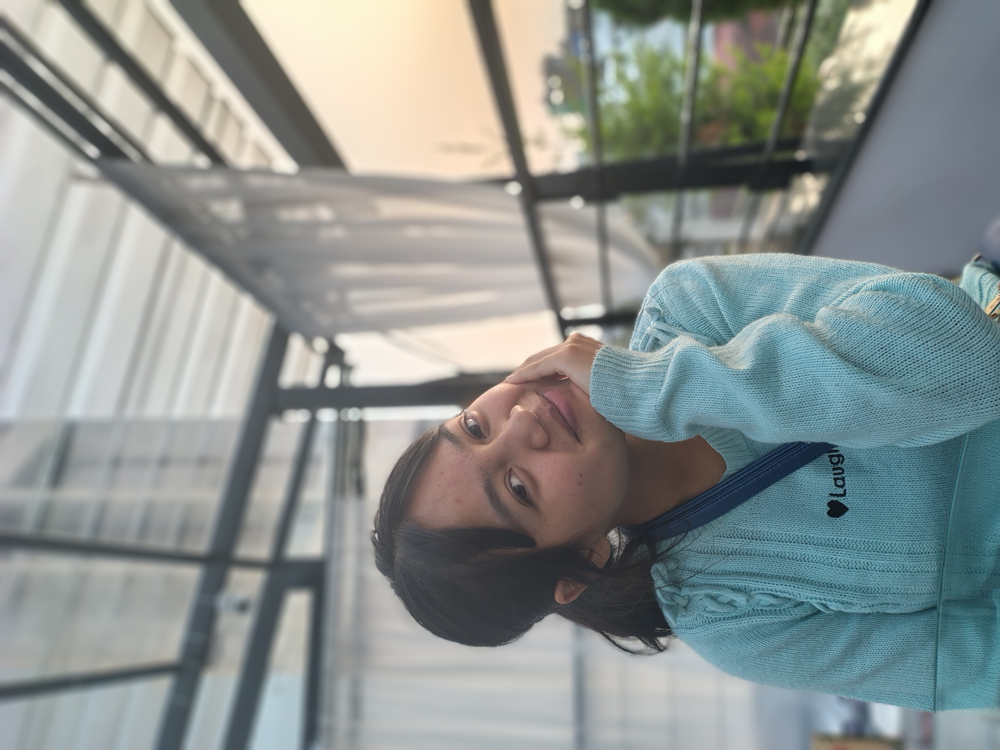
MY 22 REASONS❤
📸🤭 A CUTE ALBUM FOR MY CUTIE PIE 🤭📸
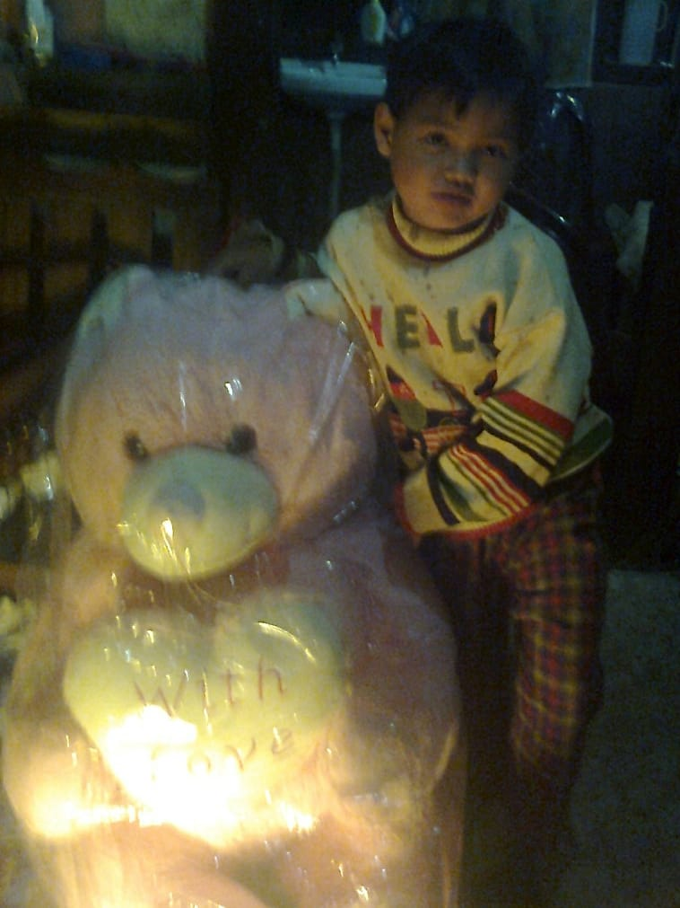
You 😊
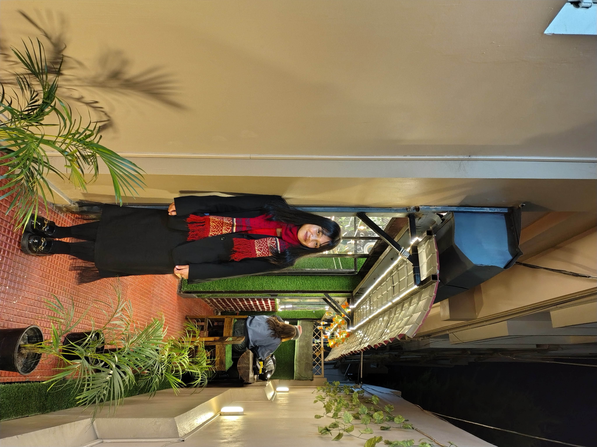
The First Pic I Clicked 😘
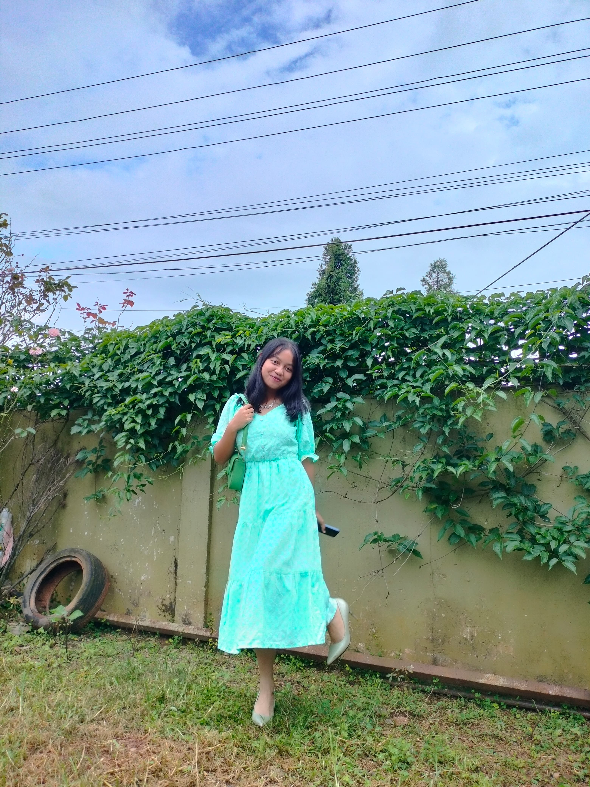
You In Blue🫠
College days😚
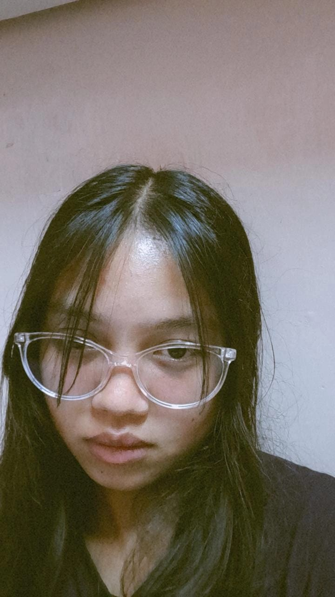
My eyes 😎
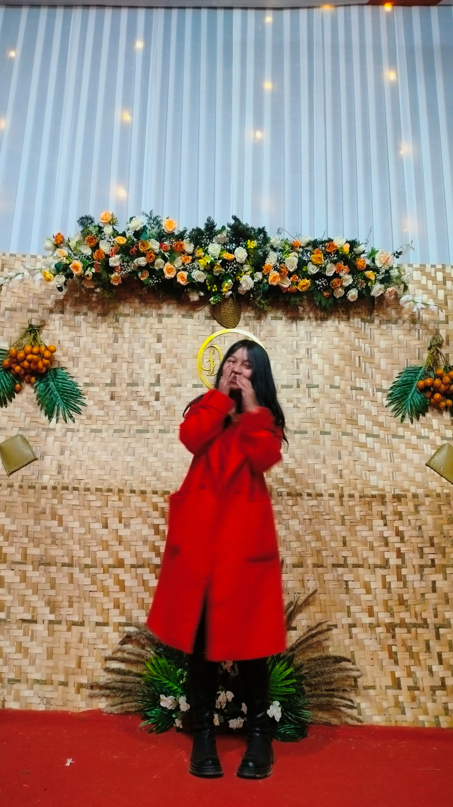
You In Red❤️
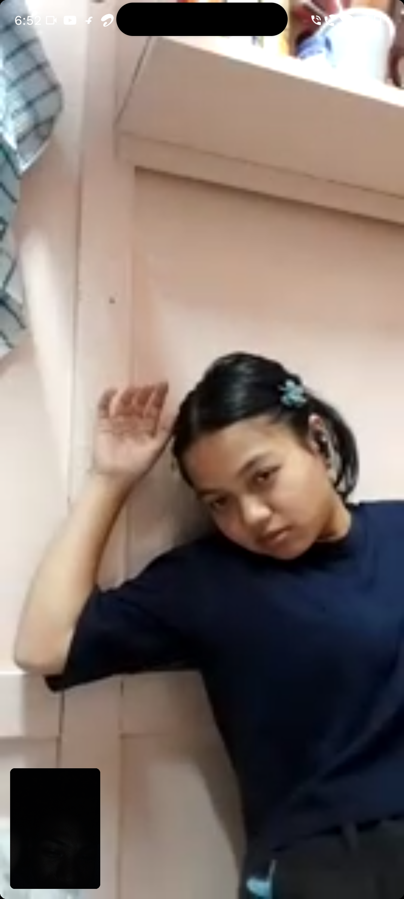
Dramatic😂
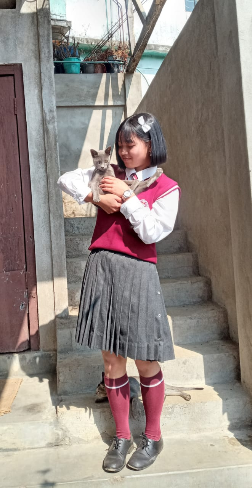
You With Grey🐈⬛
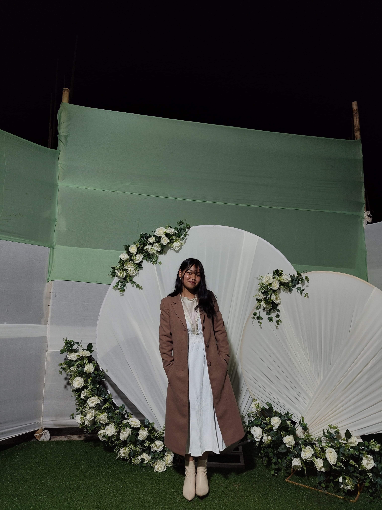
GOSH! Youre B-E-A-U-T-I-F-U-L😍
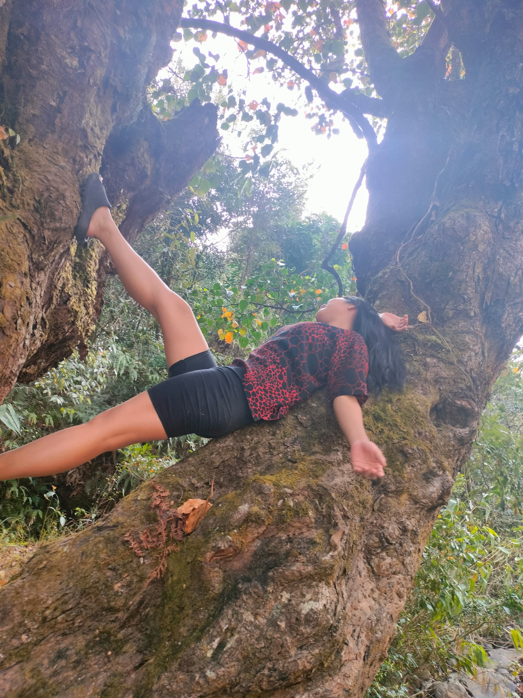
Purrfect😁
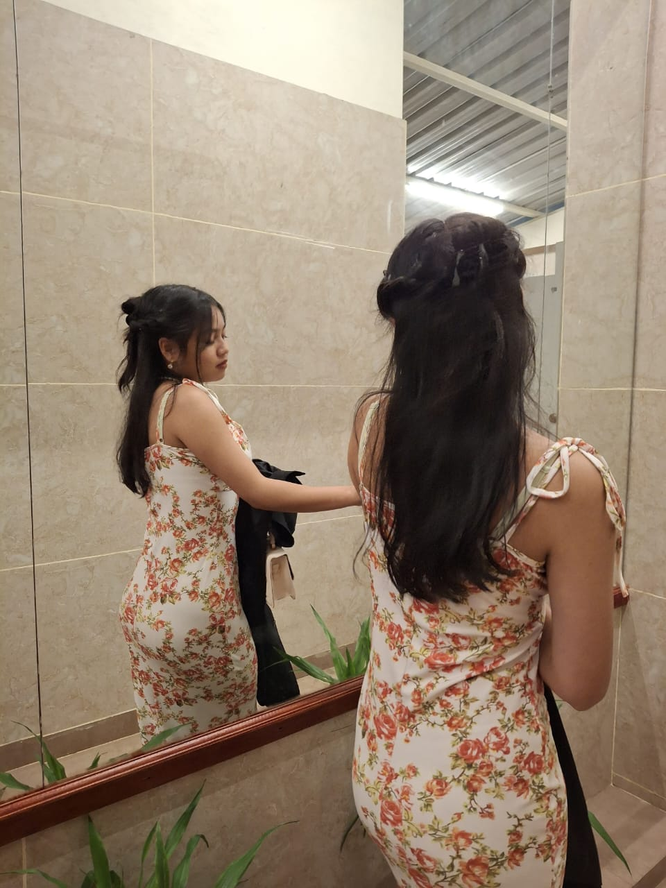
Dressed to Steal My Heart😉
📖 My Love Diary 📖
22 REASONS WHY I LOVE YOU
1.Why do i love you ?
Maybe, you showed me the definition of love, so how could I not love the person who showed me the true meaning of love...
Ever since I saw you, i knew it was love in first sight, i saw my future right in your eyes... I love you now and I love you moree...
2.Why do I love you?
Maybe when my life was just a blank paper, you entered and walked right into it and started writing the most beautiful chapters...you started
composing these beautiful songs in my life where they started replaying just like a playlist ...
and then "you" finally became one of my favourite where I could listen to it and never get tired...
3.Why do I love you?
When I lost faith in life, you came right into it and became the one reason of hope that guided me back...
you became my safe haven, when I needed someone to beleive in me again...
4.Why do I love you?
You asked me why do i love you? Maybe you saw the real me when I couldn't see myself...
or maybe it's because you reflected back a version of myself that I hadn't discovered yet.
You loved me into being, and that's a love I'll ever cherish...
5.Why do I love you?
I love....i love your all:your sparkling brown eyes, you curly wavy hair, your lips and the way you smile,
you chubby and charming cheeks....and most of all its the beauty that radiates from your heart
6.Why do I love you?
I love you because when I couldn't even love myself you showed me how to ...
you showed me how to change myself to a better me...
and with you i could finally see and therefore i adore you for being my mirror that reflected my true self back to me
7. Why do i love you?
Perhaps you became an important and cherished part of my life....the chapter and the book to my life ...
you became my favourite thing to my everything: the favourite music to my ear, the favourite movie to my life,
the favourite novel to my mind and the favourite scent to my smell....
8. Why do I love you?
How could I not love you honey..? You even pack lunches for me. You know my hunger purrfectly.
You can tell when I'm lying about eating or what I ate. After all you've done, why wouldn't I love you?...
it's the way you take care of me that I really love youu.
9. Why do I love you?
Baby...it's the way you slap me too! Yes you're right you slapping me for my mistakes on my arms and sometimes on my hands.
Gosh! It's sooo cute...I loveee youuu for correcting my mistakes. Mistakes I didn't even realise that were affecting others and mostly youu honey.
10. Why do I love you?
You introduced me to that favourite momo shop of ours...waaa! I love you for that too.
Eating 2/3 bowls of momos and alu chops. Makes me want to eat it even when writing this reason.
11. Why do I love you?
Aishhhh! Where do I begin?....you even matched my energy.
My "FEMALE VERSION" as we used to speak of it in humours. I love youuu forever.
12. Why do I love you?
You accepted all my flaws, sweetheart...you took them all. I'm sorry if they're super annoying, but I'm stuck being myself and annoying you, baby.
Sorry if they're alot to handle too but I'm here in your life to be me and drive you a little crazy too baby
13. Why do I love you?
Honey, sorry for being super possessive, extra jealous, and overthinking tons. I swear it's not really my vibe......
but seriously, I love you for putting up with me...wiwiwiwi...
14. Why do I love you?
My love for you is because you've been patient in standing by me, even when the world was pushing against me.
You've defended me against those who wanted to tear me down(u kynthei, papa, meiduh etc...no offense to them),
and you've held me up with such meowpower when I was too weak to stand. In a world that often felt too harsh, you've been my safe haven,
lifting me up and fighting for me. That's why I love you so much honey.
15. Why do I love you?
Your "sorrys"...they somehow calm me down. You never hesitate or stop yourself to say your sorry's...
I know you always say that you might be mad at me but at the end of the day you'll always come back to me. I'm so glad that I have you in my lifeeee meowww....
16. Why do I love you?
Why wouldn't I love you baby?...when your presence, your voice,and your B-E-A-U-T-I-F-U-L face are all that make me happy now...
I don't know how you've captured me like this meow, making me so obsessed and crazy for you...I can't help how I feel...
I'm hoping you feel the same way about me...I can't live through the entire day without starting off with your voice, and wouldn't sleep without seeing you first...
I really am in love with you
17. Why do I love you?
I love you because you gave me a future and a hope to live through every struggles and hardships...
You are my future and hope. What will I do without you honey?
18. Why do I love you?
Honey... your sudden and out of the blue "I love you's" always gave me butterflies, making me want to cry out loud for being the luckiest of all.
Whenever you'd noticed I was upset, you'd softly whisper those three words in my ear sculpting another smile on my face and placing a whole happy tear within my eyes..
19. Why do I love you?
Because every time we'd FaceTime, honey, I'd see your beautiful face-and it reminded me who I was truly made for,
and what I should do to keep this young, beautiful girl happy. And yeah let's not forget the JAWJOR (goshhhh youre so damn cuteeee)....
but yeah syiemmm I want to cherish my remaining days, weaks, years and my life with you, FOREVER and EVER AMEN!
20. Why do I love you?
Because you chosed to love me first. You never fail to make me feel loved and i will forever be greatful to you my love.
In case you didnt know: im the happiest boy alive
21. Why do I love you?
Because youre spilling alot of tea and gossiping with me which is soo cute you know. I have alot of fun listening to your gossips you know.
And if you dont know im still talking on the phone with you talking about mommy.
You just said ba im your personal Diary?awwwwwwww......youre asking me if youre a horrible person? no youre the sweetest among the sweetest ei.
You even managed to talk to mommy and asked for forgiveness. Like youre so sweet and kind ei syiem. Thast why i love you
22. Why do I love you?
Baby I'm leaving this one reason for today,the most special day of all-"the 22th of September" the one reason that made me write these 22 reasons.
The reason that I'm glad that you came into my life, the reasons that made me believe that anyone can become theyre better version og themselves and
"you" became that reason...you're my reason that I'm a better version of my self now...Thank you
happy 19th birthday my beautiful girl....every year you'll have my 22 reasons from me...and I'll keep on telling them...
ENJOY THE REST OF THE DAY💖💐😘